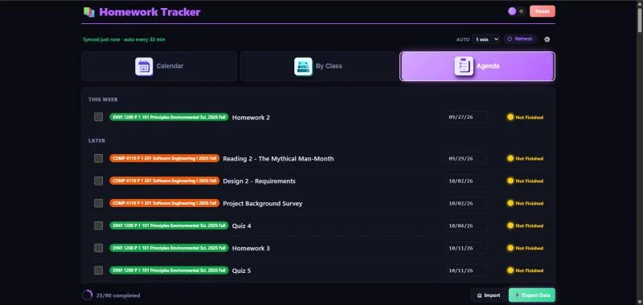
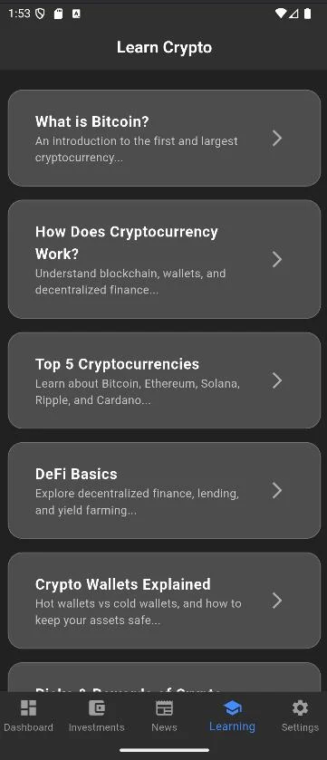

Selected projects
Things I've built
Personal projects where I get to choose the whole stack.
-
Homework Tracker Extension
A Chrome extension that brings Canvas assignments to life. It syncs automatically the moment you submit work, so there's no manual refresh, and lays every due date, exam and deadline out on an interactive calendar with day-by-day detail views and custom notes.
- Real-time Canvas sync
- 5 views
- Every enrolled class tracked

Calendar. A month grid with per-day status dots: red for overdue, amber for due within three days, green for completed. 
Alerts & notes. Clicking a day opens that date's assignments, custom notes and optional reminders. 
Announcements. Academic announcements for your university, surfaced alongside your deadlines. 
Sort by class. A per-course view of each class's assignments and their status. 
Agenda. A chronological list of everything due, color-coded by urgency. - Built on Manifest V3 with a background service worker that detects Canvas activity in real time and syncs on a user-chosen interval.
- Color-codes each day by urgency and tracks completion across all enrolled classes with a progress ring.
- Light and dark themes, plus a side-panel mode so it stays open while you work.
- JavaScript
- Chrome MV3
- Service Workers
- Canvas API
-
Cryptocurrency Investment App
A multi-tab mobile app built in Flutter with five working screens: Dashboard, Invest, News, Learn and Settings.
- 5 working screens
- Settings survive restarts

Dashboard. Personal and global insights, currency holdings and total balance. 
Invest. Search to find and browse currencies. 
News. A feed that updates with current crypto news. 
Learn. Content users can review to learn more about crypto. 
Settings. Toggles and dropdowns that persist across restarts via SharedPreferences. Sample screens; some values shown are placeholders.
- Persistent Settings tab using SharedPreferences, so toggles and dropdown choices survive app restarts.
- Custom login screen with a frosted-glass UI and animated slide-up transitions.
- Tracked down and fixed navigation bugs so all five tabs render correctly in the bottom navigation bar.
- Dart
- Flutter
- Mobile
- SharedPreferences
-
Personal Portfolio Website
This site. Built from scratch with a custom CSS design system, light and dark themes, expandable details, and screenshot galleries, version-controlled with Git and deployed on GitHub Pages.
- No framework
- No build step
- Reduced motion respected
- Every color, space and shadow is a design token, so the whole site re-skins from one block of CSS.
- Project illustrations and skill badges use SVG; the reading controls and galleries use vanilla JavaScript with no framework.
- Page transitions use short native CSS animations with reduced-motion support.
- A lightweight CSS cloud layer moves without a JavaScript rendering loop or scroll-driven parallax.
- HTML
- CSS
- JavaScript
- GitHub Pages
-
QR Code Generator
A Python tool that converts links and images into custom QR codes, built to make sharing resources easier across platforms for both individuals and small businesses.
- Links and images in
- Custom QR codes out
- Takes either a link or an image as input and produces a QR code you can download and share.
- Aimed at people and small businesses who need a quick way to hand out a resource across platforms.
- Python
- PyCharm